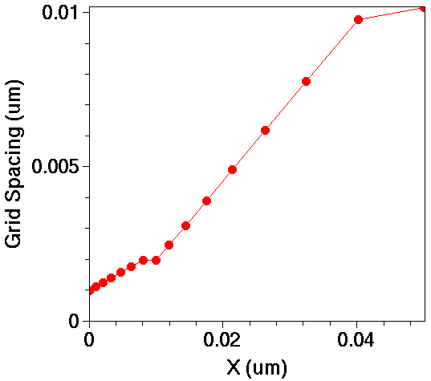
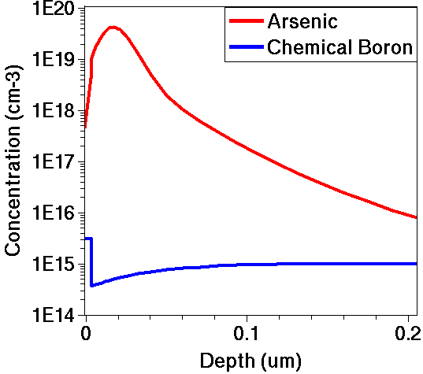
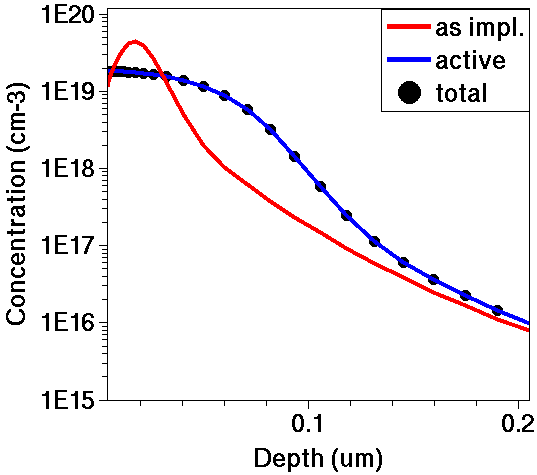
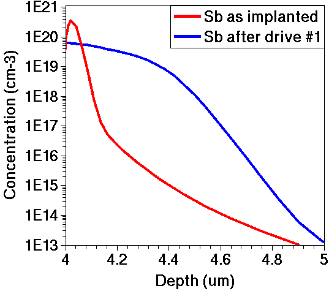
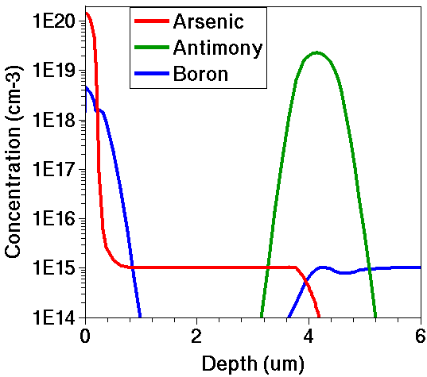

Sentaurus Process
2. One-Dimensional Process Simulation
2.1 Overview
2.2 Defining the Initial 1D Grid
2.3 Defining the Initial Simulation Domain
2.4 Initializing the Simulation
2.5 Setting Up a Remeshing Strategy
2.6 Growing Screening Oxide
2.7 Measuring Oxide Thickness
2.8 Depositing Screening Oxide
2.9 Using Tcl Control Statements
2.10 Implanting Arsenic
2.11 Saving the As-Implanted Profile
2.12 Thermal Annealing, Drive-in, Activation, and Screening Oxide Strip
2.13 Assignment
Objectives
- To perform a 1D process simulation using Sentaurus Process.
2.1 Overview
In this section, a simple 1D process simulation is performed.
Note:
- Most arguments of Sentaurus Process can be abbreviated. However, for clarity, arguments are not abbreviated in this module. In addition, you do not need to specify units explicitly.
- Sentaurus Process will use the default units. However, in the examples given, units are always given explicitly.
- Command files are available in a Sentaurus Workbench project with
two instances of Sentaurus Process: The first instance is for the example
described below, and the second instance is for the assignment in
Section 2.13 Assignment.
The complete project can be investigated from within Sentaurus Workbench in the directory Applications_Library/GettingStarted/sprocess/1DGS.
2.2 Defining the Initial 1D Grid
The initial 1D grid is defined with line commands:
line x location= 0.0 spacing= 1<nm> tag= SiTop line x location= 10<nm> spacing= 2<nm> line x location= 50<nm> spacing= 10<nm> line x location= 300<nm> spacing= 20<nm> line x location= 0.5<um> spacing= 50<nm> line x location= 2.0<um> spacing= 0.2<um> tag= SiBottom
The first argument of the line command specifies the direction of the grid. For 1D simulations, this is always x.
The grid spacing is defined by pairs of the location and spacing arguments, where spacing defines the spacing between two grid lines at the specified location. Between two locations defined in the line command, Sentaurus Process expands or compresses the grid spacing linearly.

Figure 1. Grid spacing as a function of the x-location.
In Figure 1, the grid spacing is plotted as a function of the x-location for the first 50 nm. The mesh density decreases linearly from 1 nm at X=0 to 2 nm at X=10 nm, and then to 10 nm at 50 nm. The last grid spacing in each interval usually deviates from the linear expansion to have the mesh point exactly at the location specified in the line command.
Units in Sentaurus Process can be specified explicitly in angle brackets. Unless otherwise specified, the default unit of length is micrometer. Therefore, the statements location=2.0<um> and location=2.0 are equivalent. In this module, units are always specified explicitly.
A line can be labeled with the tag argument for later use in the region command.
2.3 Defining the Initial Simulation Domain
The initial simulation domain is defined with the region command:
region Silicon xlo= SiTop xhi= SiBottom
Here, Silicon specifies the material of the region. The arguments xlo and xhi take tags as values, which are defined in the line commands.
For 2D and 3D simulations, the additional arguments ylo, yhi, zlo, and zhi define rectangular or cuboidal regions. In general, the initial simulation domain can consist of several regions.
2.4 Initializing the Simulation
The simulation is initialized with the init command:
init concentration= 1.0e15<cm-3> field= Boron
Here, the initial boron concentration in the silicon wafer (as defined in the previous region command) is set to 1015 cm-3.
The init command can load previous simulations or TDR boundary files (2D and 3D).
2.5 Setting Up a Remeshing Strategy
The initial grid is valid until the first command that changes the geometry, such as oxidation, deposition, and etching. For these steps, a remeshing strategy must be defined. Sentaurus Mesh performs the remeshing.
To define a remeshing strategy, use:
grid set.min.normal.size= 3<nm> set.normal.growth.ratio.2d= 1.4
where:
- set.min.normal.size determines the grid spacing of the first layer starting from the interface. More precisely, the first layer cannot be larger than 0.5*set.min.normal.size.
- set.normal.growth.ratio.2d determines how fast the grid spacing can increase from one layer to another in a 2D mesh.
2.6 Growing Screening Oxide
The 1D process simulation is started by thermally growing a thin layer of sacrificial screening oxide:
gas_flow name=O2_1_N2_1 pressure=1<atm> flowO2=1.2<l/min> flowN2=1.0<l/min> diffuse temperature=900<C> time=40<min> gas_flow=O2_1_N2_1
The gas_flow command specifies the gas mixture, where name defines a gas_flow record for later use in a diffuse command. The pressure of the ambient gas is set to 1 atm, and the flows of oxygen and nitrogen are set to 1.2 l/minute and 1.0 l/minute, respectively.
Other gas flow parameters, such as ambient gases and partial pressures, can be defined as well (see the Sentaurus™ Process User Guide).
The thermal oxidation step is started with the diffuse command. Here, the wafer is exposed to the oxidizing gases, defined in the gas_flow command, for 40 minutes at an ambient temperature of 900°C.
More options such as temperature ramps and numeric parameters are available (see the Sentaurus™ Process User Guide).
Sentaurus Process prints information about the progress of the oxidation step:
Anneal step: Time = 40min Temperature = 900.0C Ramp rate = 0C/s Reaction : 0s to 0.0001s step : 0.0001s temp: 900.0C sprocess Pardiso thread count = 1 Mechanics: 0s to 0.0001s step : 0.0001s temp: 900.0C --- --- --- --- --- --- --- --- --- --- --- --- --- --- --- --- --- --- --- -- Initializing: --- --- --- --- --- --- --- --- --- --- --- --- --- --- --- --- --- --- --- -- Initialization is done. --- --- --- --- --- --- --- --- --- --- --- --- --- --- --- --- --- --- --- -- Diffusion: 0s to 0.0001s step (s): 0.0001s temp: 900.0C Interpolating...elapsed time: 0.01 Reaction : 0.0001s to 0.0001727s step : 7.268e-05s temp: 900.0C Mechanics: 0.0001s to 0.0001727s step : 7.268e-05s temp: 900.0C Diffusion: 0.0001s to 0.0001727s step (s): 7.268e-05s temp: 900.0C Interpolating...elapsed time: 0.0000e+00...
Reaction : 38.29min to 40min step : 1.708min temp: 900.0C Mechanics: 38.29min to 40min step : 1.708min temp: 900.0C Diffusion: 38.29min to 40min step (s): 1.708min temp: 900.0C Interpolating...elapsed time: 0.01 Elapsed time for diffuse 24.41s
2.7 Measuring Oxide Thickness
To measure the thickness of the thermally grown oxide, use:
select z=1 layers
The select command selects a quantity for postprocessing. Selecting "1" is a way to obtain the material thicknesses.
The layers command prints a list of regions with their respective top and bottom coordinates. It also prints the integral over the selected quantity in each region. With "1" selected, the integral equals the thickness:
{ Top Bottom Integral Material }
{ -6.178796082035e-03 3.676329713272e-03 9.855125795306e-07 Oxide }
{ 3.676329713272e-03 2.000000000000e+00 1.996323670287e-04 Silicon }
Here, 3.68 nm of silicon was consumed in the thermal oxidation process, and the final oxide thickness is 9.86 nm.
Internally, Sentaurus Process uses centimeter as the unit for length.
Selecting boron, the output of the layers command would look like:
{ Top Bottom Integral Material }
{ -6.178796082035e-03 3.676329713272e-03 3.012697967871e+09 Oxide }
{ 3.676329713272e-03 2.000000000000e+00 1.969873116640e+11 Silicon }
The integral boron concentration in the silicon layer is:
1.97 x 1011 cm-2 = 1015 cm-3 x (2 x 10-4 cm - 3.67 x 10-7 cm)
This is consistent with the specified wafer doping.
2.8 Depositing Screening Oxide
A faster alternative to the simulation of the oxide growth is to deposit an oxide layer and to simulate, afterwards, a thermal cycle to account for the thermal budget during the oxidation. This is an efficient way to emulate the creation of the screen oxide if oxidation-enhanced diffusion (OED) and the silicon consumption during the oxidation are not important.
To deposit a 10 nm layer of screening oxide and to perform a thermal cycle in an inert environment, use:
deposit material= {Oxide} type=isotropic time=1.0 rate= {0.01}
diffuse temperature=900<C> time=40<min>
The diffuse command assumes an inert ambient if no gas flow is specified.
When you want to omit the oxide growth but OED is not negligible,
specifying a reacting ambient together with the following flag:
pdbSetBoolean Grid DoNotMove.Reaction 1
switches on OED without applying velocities to the mesh points. This is often used in 3D simulations.
See Section 4.2 Changing Parameters in the Command File for details about the
pdbSetBoolean command.
The deposit command here is written in long
syntax. For simple etching and deposition types, short syntax is
also available. This depositcommand, written in short syntax, would be:
deposit Oxide type=isotropic thickness=10.0<nm>
Using long syntax is recommended because it is consistent with more advanced etching types such as multimaterial and Fourier, for which only long syntax is available.
2.9 Using Tcl Control Statements
Tcl constructs can be used freely in the command file of Sentaurus Process (see the Tool Command Language module for an introduction).
The following code segment simulates oxidation or performs a deposition depending on the value of the Tcl variable SCREEN:
set SCREEN Grow
if { $SCREEN == "Grow" } {
# Growing screening oxide
# -----------------------
gas_flow name= O2_1_N2_1 pressure= 1<atm> flowO2= 1.2<l/min> flowN2= 1.0<l/min>
diffuse temperature= 900<C> time= 40<min> gas.flow= O2_1_N2_1
# Measuring the oxide thickness
# -----------------------------
select z=1
layers
} else {
# Depositing screening oxide
# --------------------------
deposit material= {Oxide} type= isotropic time= 1.0 rate= {0.01}
diffuse temperature= 900<C> time= 40<min>
}
2.10 Implanting Arsenic
To implant arsenic with an energy of 30 keV, a dose of 1014 cm-2, an implantation tilt of 7°, and a wafer rotation 0°, use:
implant Arsenic energy= 30<keV> dose= 1e14<cm-2> tilt= 7<degree> rotation= \ 0<degree>
Sentaurus Process reports:
Species = Arsenic
Dataset = Arsenic
Energy = 30keV
Dose (WaferDose) = 1e+14/cm2
BeamDivergence = 0.5deg
BeamDose = 1.0075e+14/cm2
Tilt = 7deg
Rotation = 0deg
Temperature = 300.00K
Total implant time: 0.26sec
- - - - - - - - - - - - - - - - - - - - - - - - - - - - - - - - - - - - - - -
Dose in: Silicon_1 Oxide_1 Oxide_1+Sil Total
Silicon Oxide Oxide_Silic
Boron 1.9685e+11 2.7384e+09 4.0938e+08 2.0000e+11
Arsenic 9.9635e+13 2.7549e+12 0.0000e+00 1.0239e+14
Int 1.9736e+08 7.7921e+04 1.0000e+05 1.9764e+08
Vac 2.6782e+09 1.3372e+08 1.0000e+05 2.8121e+09
ICluster 9.6849e+07 0.0000e+00 1.0000e+05 9.7049e+07
O2 1.9968e-04 2.6168e+10 1.0000e+00 2.6168e+10
The report shows that due to the nonzero tilt angle, Sentaurus Process adapted the beam dose so that the total dose deposited on the wafer is as specified. The slice angle denotes the angle between the simulation plane and the normal to the wafer flat. By default, the simulation domain is parallel to the wafer flat.
The report shows the integrated doping concentrations for each species and region.
2.11 Saving the As-Implanted Profile
To save the as-implanted profile, use:
SetPlxList { BTotal Arsenic_Implant }
WritePlx n@node@_1DasImpl.plx
The SetPlxList command defines which solution variables are saved in the .plx file. Here, only the total (chemical) boron and the as-implanted arsenic concentrations are saved. If the SetPlxList command is omitted, all available solutions are saved in the .plx file by default.
Besides the file name, here n@node@_1DasImpl.plx, the WritePlx command also accepts a material specifier, which restricts the plot to the given material. For 2D and 3D structures, the x-, y-, or z-coordinates of the 1D cutline must be given.
Figure 2 shows the as-implanted arsenic profiles and the background boron concentration. Note the boron depletion at the interface, which is caused by boron segregation during the oxide growth.

Figure 2. As-implanted arsenic profile and background boron concentration.
Figure 2 is generated by loading the .plx file into Sentaurus Visual with:
> svisual n1_1DasImpl.plx
2.12 Thermal Annealing, Drive-in, Activation, and Screening Oxide Strip
To anneal the damage during implantation, or to drive the dopants deeper into the substrate, or to activate the implanted dopants in an inert environment, use:
diffuse temperature= 1000<C> time= 30<min>
strip Oxide
SetPlxList { BTotal BActive AsTotal AsActive }
WritePlx n@node@_1Danneal.plx
Here, the structure is annealed at a constant temperature of 1000°C for 30 minutes. The annealing is performed in an inert gas, because no particular reacting ambient is specified.
The annealed profiles are written to the file n@node@_1Danneal.plx. The total (chemical) concentration of boron and arsenic, as well as the respective electrically active (substitutional) concentrations, are saved.

Figure 3. Comparison of as-implanted and annealed arsenic profiles.
Figure 3 compares the as-implanted and the annealed arsenic profiles. It is generated by loading both .plx files into Sentaurus Visual with:
> svisual n1_1DasImpl.plx n1_1Danneal.plx
Click to view the command file sprocess_fps.cmd.
2.13 Assignment
Create a Sentaurus Process command file for simulating the 1D doping profiles for a vertical npn bipolar transistor for the process flow outlined here.
Step 1. Substrate Definition
- Declare a 2-μm deep p-type substrate of (100) silicon with a boron concentration of 1.0 x 1015 cm-3.
Step 2. Buried Layer and Partial Drive-In
- Deposit 25 nm of screening oxide.
- Implant antimony with a dose of 1.5 x 1015 cm-2 and an energy of 100 keV.
- Anneal at 1100°C for 60 minutes.
- Strip the screening oxide.

Figure 4. Antimony profiles after implantations and partial drive-in in Step 2.
Step 3. Epi Layer
- Deposit 4 μm of lightly doped silicon.
- Emulate the thermal budget during the epi growth with another annealing at 1100°C for 60 minutes.
Step 4. Base Implantation and Drive-In
- Deposit 25 nm of screening oxide.
- Implant boron with a dose of 1.0 x 1014 cm-2, an energy of 50 keV, and a tilt angle of 7°.
- Anneal at 1000°C for 50 minutes.
Step 5. Emitter Implantation and Activation
- Implant arsenic with a dose of 2.0 x 1015 cm-2, an energy of 55 keV, and a tilt angle of 7°.
- Anneal at 1000°C for 35 minutes.

Figure 5. Final profiles.
For the assignment:
- Define an initial mesh and an initial simulation domain before defining the substrate.
- Define a remeshing strategy before the first deposit command.
- Save the 1D profiles after each major implantation and annealing step.
Click to view a solution of the command file sprocess1_fps.cmd.
Copyright © 2022 Synopsys, Inc. All rights reserved.